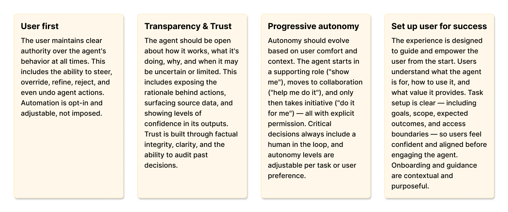
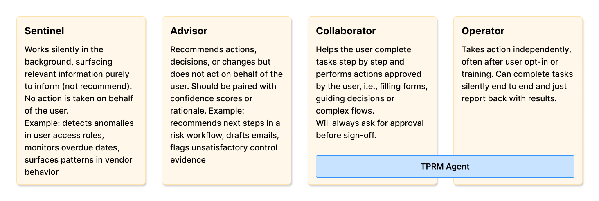

As AI became embedded across enterprise tools, security teams began expecting their most manual workflows to benefit from it too. Third Party Risk Management was one of the most painful. Every time an organization brings in a new vendor (a software tool, a service provider, a contractor with system access) they take on risk. TPRM is the process of evaluating that risk: understanding what security practices a vendor has in place, whether they meet the organization's requirements, and how much trust they can reasonably be given. The problem is that doing this well is incredibly time-consuming. Security teams have to collect documentation from each vendor, review it manually, and make judgment calls about whether the vendor's practices are acceptable. As vendor portfolios grow, the process becomes nearly impossible to scale.
At Drata, the TPRM team had been exploring a better model: criteria-based assessments. Organizations would define their own security requirements upfront (the criteria a vendor must meet) and evaluate vendors against those. The goal was to shift the process from vendor-provided answers and open-ended document review to a better structured and repeatable evaluation. The concept had been validated with a handful of customers and was ready for its first implementation. We, the AI team, partnering with the TPRM team, saw this as the right foundation for an agent-driven experience that could evaluate vendor documentation against defined criteria automatically and produce structured assessment results, turning a process that took days or weeks into one that could take hours.
This was a 0-to-1 initiative: Drata's first agent-driven experience, with no internal patterns to follow, no prior interaction models to reference. The design challenge was "what does AI-assisted work look like in Drata".
What made this different from a standard feature launch: the agent was conceived as the foundation for a future standalone TPRM product, planned for August 2026. The design work here had to be architected to carry a full product.
I led the design of Drata's first AI-assisted workflow, establishing the initial interaction model for agent-driven experiences within the product.
- Established the initial patterns for how AI integrates into product workflows — partnering with the AI Director to translate early agent concepts into concrete interaction models, including explainability, autonomy, and communication patterns.
- Designed a new class of workflow — an end-to-end agent experience embedded within vendor risk reviews, transforming a manual, document-heavy process into an AI-assisted system while preserving user control and trust.
- De-risked a 0→1 product direction — Partnering with the AI PM, I led 5 moderated sessions to validate the concept, followed by 3 months of biweekly sessions with enterprise design partners, led by both the TPRM and the AI team.
- Enabled a new product surface — The TPRM Agent serves as the foundation for a standalone TPRM product (roadmapped for August 2026), requiring design decisions that scale beyond a single feature.
Before defining the experience, we needed to establish the role AI should play in this workflow and how much autonomy should it have.
Because Third Party Risk Management involves high-stakes decisions that professionals must defend to leadership and auditors, an agent that does the analysis, shows its work, and preserves human judgment at every meaningful decision point and only acts autonomously when given permission to, seemed the best approach for this experience. Users would always be in the loop reviewing AI outputs, signing off on decisions, and controlling how much autonomy the system has. The framing "AI as an assistive layer" became the organizing principle for every interaction decision that followed.
To define where AI could assist the user, we mapped the core user flows of this experience, highlighting where AI would bring meaningful value.
Review flows — existing workflow with and without the agent layer
To allow our users to define how much autonomy the agent could act with, we define some basic settings the user could manage that would allow the agent to perform specific tasks automatically.
Organizations can tune how much responsibility the agent takes on within the workflow.
AI Design principles
As part of this initiative, I partnered with the AI Director, AI PM, and TPRM designer to do a small workshop to define Drata's AI design principles and personality model (levels of presence and autonomy) from the ground up. We synthesized themes from working sessions into a cohesive framework, which I later refined and translated into final language. These principles now guide AI feature development across the platform.
These are the 4 design principles, out of 6, that were most important for this project.

AI design principles — synthesized from cross-team working sessions, now applied across all AI features at Drata
Personalities Model
TPRM Agent operates primarily at the Collaborator level, helping users complete tasks step by step with approval required at key moments. For vendors with a Trust Center in Drata, limited Operator behavior is permitted through configurable autonomy settings: users can give the agent permission to request access to a vendor's Trust Center, collect documents automatically, and run the assessment.

Four autonomy levels — the TPRM Agent operates at Collaborator, with limited Operator behavior for Trust Center vendors
The core structural decision was to introduce a dedicated AI surface on top of the existing vendor review workflow without replacing the existing manual process. This gave users a clear place to interact with the agent while preserving the familiar underlying workflow. Teams with stricter policies around AI could still rely on the manual path, while others could adopt AI assistance progressively.
The workflow runs in five stages:
Users upload an existing questionnaire; the system parses it into structured evaluation criteria. Organizations keep their mental model while the agent adapts it to the new criteria model.
Criteria creation — parsing a vendor questionnaire into structured evaluation criteria
An initiation surface within the vendor profile allows users to start a review with the agent without disrupting the default workflow.
Agent entry point — accessible within the vendor profile, without disrupting the default workflow
For vendors using Drata's Trust Centers, the agent collects and processes vendor documentation, removing one of the most manual steps in the process. For vendors without a Drata Trust Center, for the first iteration users had to provide documents and the agent would process them. The experience was designed to support future expansion to additional Trust Center providers to allow automatic document collection for those vendors as well.
The agent evaluates documentation against each criterion and returns: Met, Not Met, or Inconclusive, with supporting explanations and evidence references.
Guided experience — high user involvement, specially for vendors without a Drata Trust Center
Autonomous experience for vendors with a Drata Trust Center
This is where the agent passes the baton to the user for them to review the outputs, adjust results where needed, and validate the assessment before proceeding. For criteria marked as Not Met or Inconclusive, the agent generates a follow-up questionnaire to request additional information from the vendor. Once responses are received, the agent re-runs the assessment and highlights any changes, allowing users to iteratively refine the evaluation.
Review and iteration — users validate results and can trigger re-assessment after additional vendor responses
Observations can be flagged as potential risks. The agent generates a structured report exportable as PDF with an executive summary, criteria results, evidence references, and observations flagged as risks.
Risk creation and reporting — flagging observations as risks and generating the assessment report
Transparency and system behaviors
Beyond the core workflow, we needed to define how the system showed transparency, auditability, and user control across every step.
Every step in the assessment process is recorded, including how criteria were generated, what evidence was analyzed, and how results evolved over time. This ensures decisions can be reviewed, audited, and defended when needed.
Users can inspect not just the final assessment, but the reasoning behind it, including requirement-level status and supporting evidence.
AI-generated results can be reviewed, adjusted, or overridden at any point, ensuring human judgment remains the final authority.
Transparency and system behaviors — audit trail, explainability, and user override controls
The research process was structured in two phases. The goal of the first phase was to understand whether this workflow could be trusted and adopted in a real vendor review process. The goal of the second phase was to calibrate our product.
Phase 1: Concept validation (5 moderated sessions)
Partnering with the AI PM, I ran 5 moderated sessions to verify the criteria concept aligned with their mental model, define which documents they gathered most frequently (we would use this to test our AI model), and define what would take them to trust our agent's outputs.
Participants worked through interactive prototypes, completing tasks such as initiating a review, uploading documentation, and evaluating AI-generated results.
The sessions confirmed the criteria concept was sound and surfaced the core condition for adoption: users were open to AI-assisted assessments if the system made its reasoning visible and kept them in control of final decisions.
Phase 2: Design partner refinement (3 months, biweekly sessions)
Starting in mid-December 2025, 6 enterprise design partner organizations joined biweekly sessions and tested the agent using their own vendor criteria and real documentation.
This phase was less about validating the concept and more about calibrating the experience for real-world use. Design partners helped us refine three critical parts of the model:
- Criteria calibration — We refined how the system interpreted and evaluated criteria so the model better matched how teams assess vendor evidence in practice.
- Assessment states — In addition to Met, Not Met, and Inconclusive, we introduced Partially Met to better reflect how users reason about incomplete or mixed evidence.
- Deeper explainability — We surfaced the status of each underlying requirement within a criterion, so users could see exactly which requirement was met, not met, or inconclusive, rather than only seeing the final criterion status.
These refinements made the agent's outputs more legible, more defensible, and more aligned with how security teams actually make decisions.
Each result surfaces the AI's reasoning because users need to defend assessments to leadership. Any AI-generated result can be overridden, human judgment always has final authority.
Guided experience vs. conversational AI
We chose to design a guided, structured workflow rather than an open-ended conversational experience. This was partly a resource constraint, given that building a robust conversational system would have required significantly more technical investment, but it was also a strategic decision.
This was a new interaction model for our users. Introducing AI into a high-stakes workflow meant we needed to reduce ambiguity. A conversational interface would have created too much variability in how users interacted with the system, making outcomes harder to predict, debug, and trust.
The guided experience allowed us to:
- Deliver value faster and get the product into customers' hands early
- Constrain the experience to clear, repeatable workflows
- Set users up for success by making expectations and system behavior explicit
At the same time, we designed this as a stepping stone toward a more flexible, conversational experience. The interaction model, patterns, and system behaviors established here were intentionally structured to support that evolution, allowing us to learn from real usage before introducing more open-ended interactions.
- Strong validation from enterprise design partners — All 6 Agent design partners saw a promising future and were converted into TPRM Standalone design partners, meaning they would partner to shape the broader TPRM platform.
-
Positive qualitative feedback and adoption signals — Design partners highlighted that the agent aligns closely with how their teams already operate, with feedback reinforcing its value in reducing manual effort and improving consistency.
"Third-party risk is one of the most pressing challenges for every CISO. Drata's Agentic TPRM Assessment will fundamentally change how organizations operationalize third-party risk management — bringing rigor, consistency, and scale. Using Agentic AI, security teams can run assessments in minutes, achieve a more accurate risk posture across the supply chain, and operate at AI speed." — CISO, Enterprise customer
- Projected efficiency gains of ~75% — Based on testing with design partners, vendor assessments that typically take days can be completed in hours through automated evidence analysis and structured evaluation.
This project gave me the opportunity to put into practice many of the concepts I had been exploring around AI, while working on Drata’s first AI-assisted, agent-driven experience.
A key focus throughout the project was defining what users needed in order to trust the TPRM Agent to ensure users felt confident that the system could support a high-stakes, manual process and produce reliable, high-quality assessments. Trust became a central design constraint, shaping decisions around explainability, control, and transparency.
Working closely with design partners was especially valuable. Their willingness to engage, provide feedback, and test the agent in a controlled environment gave us direct visibility into how TPRM workflows actually operate. This made it easier to identify gaps, refine the experience, and validate whether our approach held up in real scenarios.
This project also highlighted the importance of strong cross-team collaboration. Two independent teams (AI and TPRM) were building this experience together. Early on, we had to establish clearer ownership, align on goals, and improve how we communicated changes. As we did, the collaboration became more effective and ultimately strengthened the outcome.
Another important takeaway was how critical it was to embed the agent within existing workflows. We intentionally designed AI as a layer on top of users’ current mental models. This made the experience feel more approachable and reduced the perceived risk of adopting AI in a high-stakes process.
The scope of the work also pushed me to think beyond the immediate feature. This agent is the first step toward a standalone product, and the first agentic experience at Drata. That meant the patterns we defined needed to scale for future AI work across the platform. It made thinking about what would hold as the system expanded critical.
I continue to apply these learnings in my work on AI-first features, especially in finding the right balance between system capability and user trust in high-risk workflows.